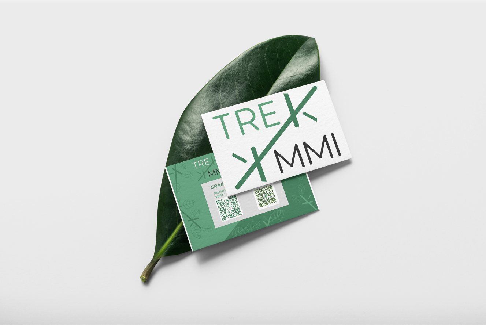
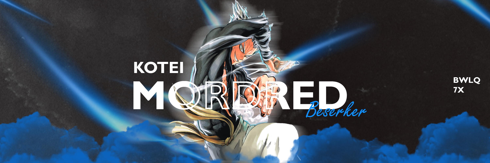
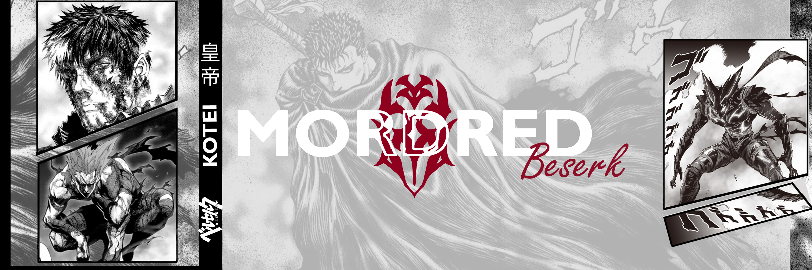

MORE
WORK
MOTION DESIGN, LOGO,
BANNIÈRE, RETOUCHE PHOTO...
Scroller vers le bas pour voir mes autres réalisations
↓
ANIMATION
TYPE : Mise en page
LOGICIELS :After Effects
GENRE : animation
Création d'une animation, cette animation a été réalisé dans le cadre
d'un exercice dont le but était dans un premier temps d'apprendre
le logiciel et la faire rebondir puis dans un second temps d'animer
un cycliste à partir d'une illustration.
[1]
KEY ANIMATION
TYPE : Mise en page
LOGICIELS :After effect, Illustrator
GENRE : Animation
Création d'une animation à partir d'un logo,
Le but de cette animation était de donner de transformer
le logo en le créant grâce à des formes.
[1]
TREKK MMI
TYPE : Mise en page
LOGICIELS : Illustrator
GENRE : Logo
Création d'un logo pour l'agence TREKK MMI, fait en collaboration avec Quentin LEMAÎTRE.
Le forme en double "K" représente les deux "K" composant le nom de l'agence "TREKK"
mais il représente également les branches d'un arbre rappelant les valeurs écologiques
de l'agence.
[1] [2]
BANNIÈRE
TYPE : Mise en page
LOGICIELS :Photoshop
GENRE : Bannière web
La premiére image est une création d'une bannière twitter avec un thème spécifique
sur le manga one punch man, plus particulièrement le personnage Garou.
L'ajout de la transparence sur les lettres R et D uniquement sur le nom permet
de voir le personnage avec plus clarté mais permet également la lecture du nom
"Mordred" lisible .
La seconde image est une création d'une bannière twitter avec un thème spécifique
sur le manga Berserk, plus particulièrement le personnage Guts. L'ajout d'éléments
provenant du manga permet une immersion plus profonde dans l'univers de ce dernier
mais nous remarquons également d'autres références à d'autres manga.
[1] [2] [3]
 [4]
[4]
PARIS VINTAGE
TYPE : Retouche photo
LOGICIELS :Photoshop
GENRE : Couverture de magazine
Retouche photo d'un paysage urbain, l'objectif de la retouche était de donner
un aspect vintage en y incorporant du grain, en travaillant la vibrance
et la saturation des couleurs avec un ajout de grain de pellicule photographique.
[1]
 [2]
[2]